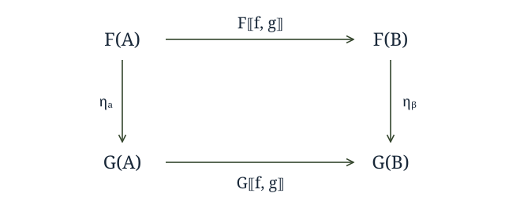

Back in the days of HYLO, it was common to write hylomorphisms with an additional natural transformation in them. Well, I was still coding in evil imperative languages back then, but I have it on reliable, er.. well supposition, that this is probably the case, or at least that they liked to do it back in the HYLO papers anyways.
Transcoding the category theory mumbo-jumbo into Haskell, so I can have a larger audience, we get the following 'frat combinator' -- you can blame Jules Bean from #haskell for that.
hyloEta :: Functor f =>
(g b -> b) ->
(forall a. f a -> g a) ->
(a -> f a)
hyloEta phi eta psi = phi . eta . fmap (hyloEta phi eta psi) . psi
We placed eta in the middle of the argument list because it is evocative of the fact that it occurs between phi and psi, and because that seems to be where everyone else puts it.
Now, clearly, we could roll eta into phi and get the more traditional hylo where f = g. Less obviously we could roll it into psi because it is a natural transformation and so the following diagram commutes:

This 'Hylo Shift' property (mentioned in that same paper) allows us to move the 'eta' term into the phi term or into the psi term as we see fit. Since we can move the eta term around and it adds no value to the combinator, it quietly returned to the void from whence it came. hyloEta offers us no more power than hylo, so out it goes.
So, if its dead, why talk about it?
Well, when we move to a generalized hylomorphism we have a design decision that has some performance effects, and my initial pass at a generalized hylomorphism isn't as general as it could be. When we open up the generalized hylomorphism and look at its guts (check the slightly updated source code from yesterday) we see:
g_hylo' w m f g = liftW f . w . fmap duplicate . fmap (g_hylo' w m f g) . fmap join . m . liftM g
expanding that to include the eta term gives us 4 candidate locations where we can abuse its status as a natural transformation to slot it in.
g_hylo'1 w m f eta g =
liftW f .
w . eta . fmap duplicate . fmap (g_hylo' w m f g) . fmap join . m .
liftM g
g_hylo'2 w m f eta g =
liftW f .
w . fmap duplicate . eta . fmap (g_hylo' w m f g) . fmap join . m .
liftM g
g_hylo'3 w m f eta g =
liftW f .
w . fmap duplicate . fmap (g_hylo' w m f g) . eta . fmap join . m .
liftM g
g_hylo'4 w m f eta g =
liftW f .
w . fmap duplicate . fmap (g_hylo' w m f g) . fmap join . eta . m .
liftM g
g-hylo'1 and g_hylo'4 are particularly interesting because we have functions sitting right next to them that we can fuse it into by generalizing the type signatures only slightly and because that leaves a run of 3 fmaps in a row that we can fuse together. If we generalize the signatures of both w and m we get the following definition that allows you to place it on the left or the right, and for g_hylo to not have to care about it.
-- new and improved!
g_hylo :: (Comonad w, Functor f, Monad m) =>
(forall a. f (w a) -> w (g a)) ->
(forall a. m (e a) -> f (m a)) ->
(g (w b) -> b) ->
(a -> e (m a)) ->
(a -> b)
g_hylo w m f g = extract . g_hylo' w m f g . return
-- | the kernel of the generalized hylomorphism
g_hylo' :: (Comonad w, Functor f, Monad m) =>
(forall a. f (w a) -> w (g a)) ->
(forall a. m (e a) -> f (m a)) ->
(g (w b) -> b) ->
(a -> e (m a)) ->
(m a -> w b)
g_hylo' w m f g = liftW f . w . fmap (duplicate . g_hylo' w m f g . join) . m . liftM g
The slightly generalized signatures for our two distributive laws now allow them to change functors on the way through, but we shed a superfluous argument.
Note that while 3 'Functors' e, f and g are involved, only f needs to be a Functor in Hask because we do the duplication, hylomorphism and join all inside f in either case. And most of the time e = f = g. For instance e or g could be exponential or contravariant.
So now that we've generalized our generalized hylomorphism we're done right?
Not quite. Unfortunately the same trick doesn't work for the generalized chronomorphism defined last night.
To see why, we have open up chrono and peek at its guts.
chrono = g_chrono id id
Well, that was boring. Digging deeper we find:
g_chrono :: (Functor f, Functor g, Functor m, Functor w) =>
(forall b. f (w b) -> w (f b)) ->
(forall b. m (f b) -> f (m b)) ->
(f (Cofree w b) -> b) ->
(a -> f (Free m a)) ->
a -> b
g_chrono w m = g_hylo (distCofree w) (distFree m)
Sticking in hylo's vestigial natural transformation, we get:
g_chronoEta :: (Functor f, Functor g, Functor m, Functor w) =>
(forall b. g (w b) -> w (g b)) ->
(forall b. m (f b) -> f (m b)) ->
(g (Cofree w b) -> b) ->
(forall c. f a -> g a) ->
(a -> f (Free m a)) ->
a -> b
g_chronoEta w m f eta g = g_hylo (distCofree w . eta) (distFree m) f g
-- g_chronoEta w m f eta g = g_hylo (distCofree w) (eta . distFree m) f g
And so, we roll up our sleeves ready to merge it into something, be it f, g, w, m, anything, but it seems the only places eta can go is to merge into one of the distributive laws, because f and g are executed lifted.
Unfortunately, the user passed us rules for distributing the base functor of the cofree comonad and free monad, not for distributing the whole cofree comonad. And my efforts to generalize distFree and distCofree have thus far met with some frustration, there isn't much to grab onto there to write the more general signature.
Ideally, I'd just be able to merge it into one of the distributive laws. Since the HYLO guys liked to put it on the left of the recursive call to the hylomorphism, we'll look at distCofree. The desired signature for distCofree' would be:
distCofree' :: (Functor f, Functor g, Functor h) =>
(forall a. f (h a) -> h (g a)) ->
f (Cofree h a) -> Cofree h (g a)
and it should have the property that:
distCofree' (f . eta) == distCofree' f . eta
Without that, g_chronoEta is more powerful than g_chrono. Naturally.